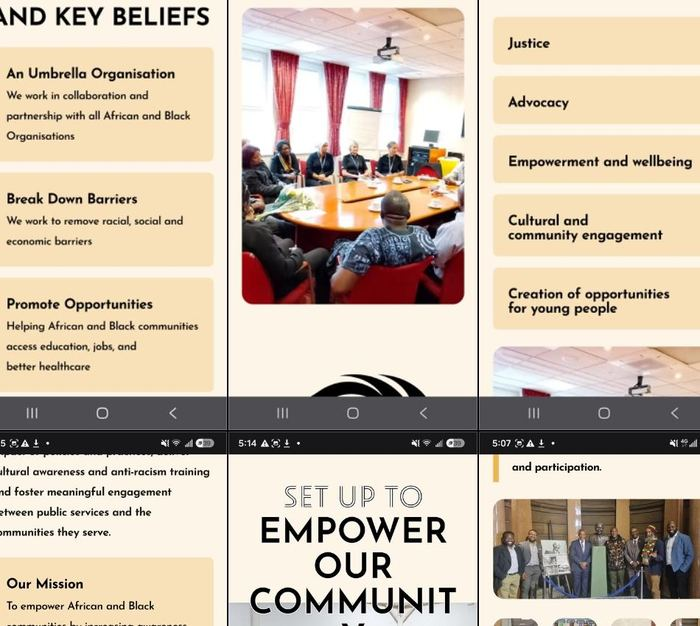

Education & Civil Rights
Anti-Racism Education with Glasgow City Council
Working hand-in-hand with Glasgow City Council Education Services, NABA has delivered landmark anti-racism and inclusion sessions to over 600 students. In partnership and collaboration with Dr Stuart Lawrence (brother of the late Stephen Lawrence) and Mr Adeyemi Johnson (brother-in-law of the late Sheku Bayoh), we bring lived experience and transformative education into Scottish classrooms.
Represented by Director Pa Lamin Komma and Executive Ambassadors at the Glasgow City Chambers Education Committee, alongside Moving Forward Movement CEO Peter Igbinsa, NABA ensures structural change accompanies classroom dialogue.
600+
Students Reached
St Andrews
School Sessions
City Chambers
Policy Dialogue